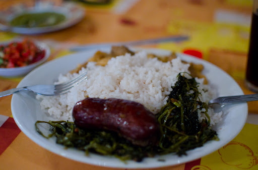

Sausages and Watercress

Descriptions
This sausage and watercress is a Malagasy food. They usually eat it as a main course during lunch. And always accompanied by hot rice.
Ingredients
- Sausages
- Wathercress
- Tomato
- Onion
- Rice
- 500 ml of wather
- Salt
Steps
- Prepare each Ingredient
- Cook rice
- Cook the sausages, tomatoes and onions thogether.
- After 20 minutes, watercress is added to the saussages.
- We wait 40 minutes and the saussage and watercress is ready